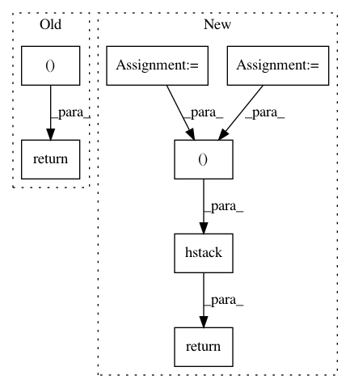

fe87e2c499d4312656146c33de8c62177944b801,skvideo/measure/strred.py,,strred,#Any#Any#,77
Before Change
strred = srred * trred
strredsn = srredsn * trredsn
return strred, strredsn
After Change
rredssn.append(np.abs(np.mean(spatialRef - spatialDis)))
rredtsn.append(np.abs(np.mean(temporalRef - temporalDis)))
rreds = np.array(rreds)
rredt = np.array(rredt)
rredssn = np.array(rredssn)
rredtsn = np.array(rredtsn)
srred = np.mean(rreds)
trred = np.mean(rredt)
srredsn = np.mean(rredssn)
trredsn = np.mean(rredtsn)
strred = srred * trred
strredsn = srredsn * trredsn
return np.hstack((rreds.reshape(-1, 1), rredt.reshape(-1, 1), rredssn.reshape(-1, 1), rredtsn.reshape(-1, 1))), strred, strredsn
In pattern: SUPERPATTERN
Frequency: 3
Non-data size: 7
Instances
Project Name: scikit-video/scikit-video
Commit Name: fe87e2c499d4312656146c33de8c62177944b801
Time: 2017-01-22
Author: tgoodall@utexas.edu
File Name: skvideo/measure/strred.py
Class Name:
Method Name: strred
Project Name: SheffieldML/GPy
Commit Name: c46a1aaa40d45512468ca7c3c004656ad2f94afb
Time: 2013-09-09
Author: alan.daniel.saul@gmail.com
File Name: GPy/core/gp.py
Class Name: GP
Method Name: _log_likelihood_gradients
Project Name: nipy/dipy
Commit Name: f698c4dbfc266bae9c1d1ceb0d906863c9b54e2e
Time: 2013-05-14
Author: caruyer@gmail.com
File Name: dipy/core/sphere_stats.py
Class Name:
Method Name: random_uniform_on_sphere